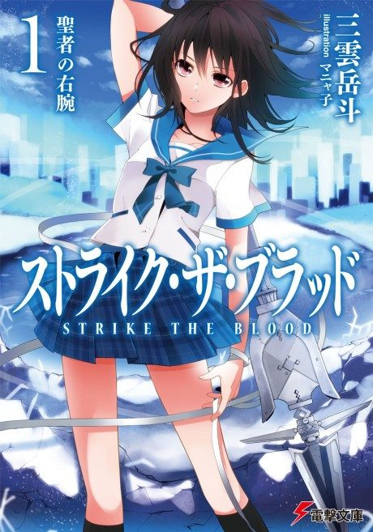

Strike the Blood
ストライク・ザ・ブラッド
The anime covers the whole light novel.
6.6AniList score
—Animeter, no votes yet
24episodes
Rate it or report where you stopped
Watch order
In airing order. Episode numbers on this site count straight through every season, so season 2 starts at episode —.
1
2013 · TV
Strike the Blood
Episodes1–2424 ep
Films, OVAs and specials
Not counted in the episode numbers above.
·
2016 · OVA
Strike the Blood Second
·
2018 · OVA
Strike the Blood III
·
2020 · OVA
Strike the Blood IV
·
2022 · OVA
Strike the Blood FINAL
Sources: AniList